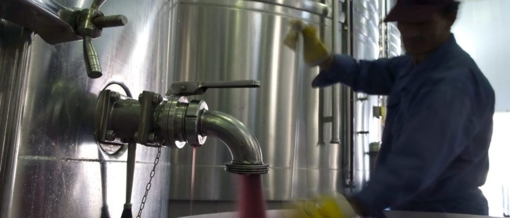

Visitas
Para quienes quieran conocer la experiencia guitar wines, abrimos nuestras bodegas al público. Nos podés visitar de lunes a viernes entre las 10 y las 14hs. Con el ticket de tu tour, te invitamos a degustar una copa de nuestras variedades.
Ubicación
Empalme ruta 15 con ruta 10, Rocha, Uruguay.
La experiencia
Vení a vivir la experiencia guitar wines. La cosecha de nuestras uvas, la selección de las mismas y todo el proceso de elaboración, a cargo de los más preparados profesionales.
